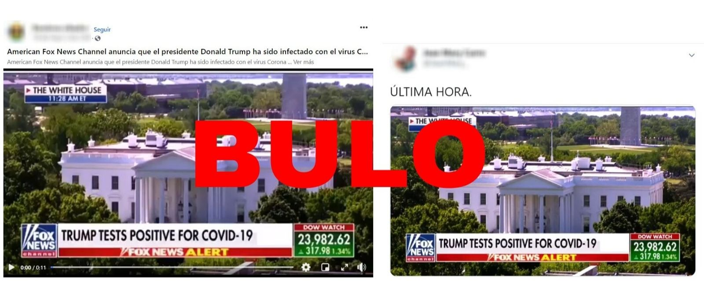
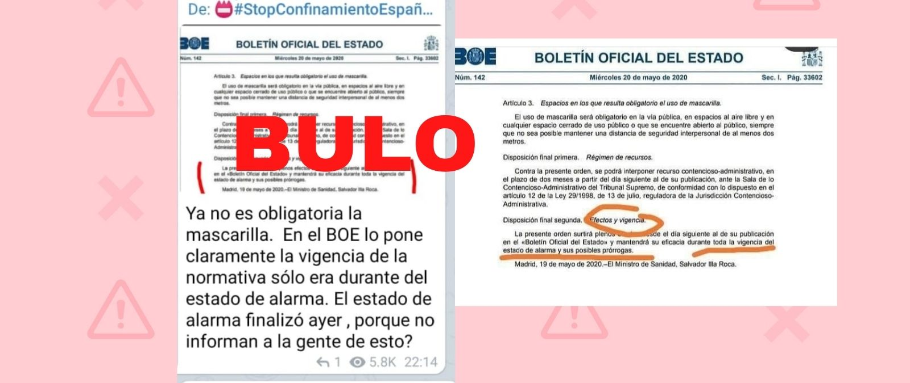

No, este vídeo que anuncia el resultado positivo por COVID-19 de Donald Trump no es real: es un fragmento manipulado

Circula por redes sociales un vídeo del canal de noticias estadounidense
Fox News en el que la presentadora dice que el presidente de los Estados Unidos, Donald Trump, ha dado positivo en COVID-19 tras hacerse un test.En el rótulo también se puede leer 'Trump tests positive COVID-19'.Es un bulo.El vídeo ha sido manipulado y quien dio positivo fue un trabajador de la Casa Blanca.
Este es el vídeo manipulado:
https://www.youtube.com/watch?v=uErIg1UfPzU=youtu.be
El vídeo que se comparte es una manipulación a partir de de una emisión del canal de noticias Fox News del 7 de mayo.Sin embargo, el contenido original informa sobre el resultado positivo en el test por coronavirus de un ayudante personal de Trump, mientras que afirma que tanto el presidente como el vicepresidente han dado negativo.Otros medios como
CNN también informaron sobre el positivo del ayudante del presidente estadounidense.
Este es el vídeo original:
El fragmento que se mueve en redes sociales se ha cortado para que parezca que es Donald Trump quien está infectado por coronavirus.Además, también se ha manipulado el rótulo que acompaña la noticia, eliminando la palabra 'valet', que es el ayudante, como se puede ver en la imagen:
También se puede comprobar que el vídeo se ha cortado ya que, al comienzo, la hora que aparece en pantalla indica que son las 11:28 mientras que cuando avanza, la hora marca las 11:27 horas.Por lo tanto, se trata de un vídeo manipulado.
El vídeo ha circulado también por otros países y ha sido desmentido por el medio jordano
Fatabyyano project , miembro de la International Fact-Checking Network (IFCN) a la que también pertenece
Maldita.es .
Posted On: 2020-05-22T00:00:00

Content Date: 2020-05-22
Download Date: 2021-05-13
Document ID: L0C04C965